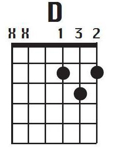
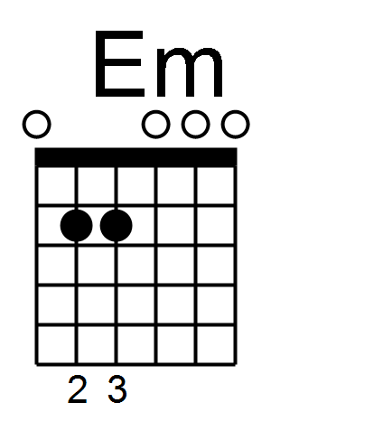
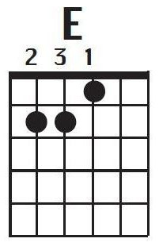
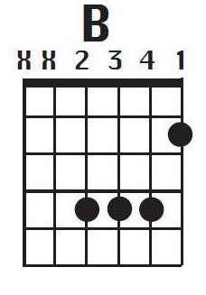

The first chord we will cover will be the 'G' Chord.
Put your first finger on the 'B' string in the second fret,
put your second finger on string 'E'(thick) on the third fret,
finally put your third finger on the 'E'(thin) string on the
third fret. Refer to the diagram above. Using the 1-2-3-4
strumming pattern we covered earlier, play the G chord with
down strokes in the 1-2-3-4 pattern until you feel a bit more
comfortable.
D Chord

To play the 'D' chord is played by putting your first finger on the 'G' sting of the second fret, then you place your second finger on the 'E'(thin)
of the second fret, then finally place your third finger on the 'B' string of the third fret, holding that position stumb the 1-2-3-4 downstrokes stumming pattarn
we covered earlier, repeat this until it becomes natural.
Em Chord

To play 'Em'(E minor) you will have to place your second finger on 'D' sting on the second fret and also your third finger on 'D' string
on the second fret, holding that position strum the 1-2-3-4 downstrokes strumming pattern
that we covered earlier, and repeat this until satisfied.
E Chord

To play the 'E' chord you must first place your first finger on the 'G' string on the first fret, and the second finger on the 'A' string on
the second fret, and the third finger on the 'D' also on the second fret, holding that position strum the 1-2-3-4 downstrokes strumming pattern
we covered earlier, and continue until it becomes sufficient.
C Chord
To play 'C' you will have to place your first finger on the 'B' string on the first fret, and place the second finger on the 'D' string on the
second fret. Lastly place your third finger on the 'A' sting on the third fret, as said before, holding that position strum the 1-2-3-4 downstrokes strumming pattern
we covered earlier. Repeat this until it becomes comfortable.
A Chord
To play the 'A' Chord you must place your first finger on the 'D' string on the second fret. Next, place your second finger on the 'G' string also on the second fret,
finally place your third finger on the 'B' string and again on the second fret, holding that position strum the 1-2-3-4 downstrokes strumming pattern
we covered earlier and rerun until adequate.
F Chord
In order to learn to play the 'F' chord you must have the previous chords well practised as it's slightly more challenging on
the fingers. First you must hold down the 'B' and 'E'(thin) with your first finger (yes both of them!). Next, place your second
finger on the 'G' string and your third on the 'D' string. Now strum to your hearts content, and of course, continuing to use the 1-2-3-4 downstrokes strumming pattern
we covered earlier. Rehearse until you've reached a satisfactory standard.
B Chord

To play this chord you must first place your first finger on 'E'(thin) in the second fret. Next, place your second finger on the 'D' string in the fourth fret
and put the third finger on the 'G' string on the fourth fret. Again, put your fourth finger on the 'B' string on the fourth fret, and while holding that position, strum the 1-2-3-4 downstrokes strumming pattern
we covered earlier. Repeat this until it becomes more comfortable.